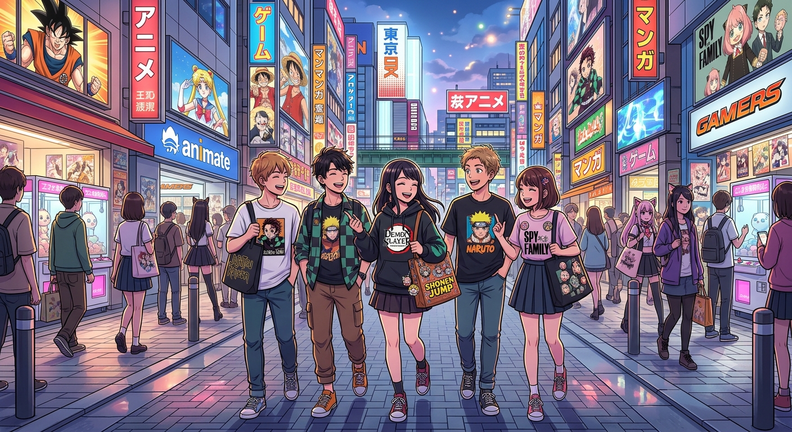

Meu primeiro blog de anime
Por: Maria Eduarda Siqueira Lopes
Boas-vindas ao meu blog! Aqui vou compartilhar curiosidades sobre a cultura dos animes no japão A cultura dos animes no Japão vai muito além do entretenimento televisivo: ela é uma indústria bilionária integrada à rotina do país e com hábitos sociais bastante específicos. Fatos e Costumes da Cultura Anime Cosplay tem regras rígidas: Ao contrário do Ocidente, onde as pessoas vão fantasiadas nos transportes públicos para eventos, no Japão é proibido usar cosplay na rua. Os participantes devem levar as roupas em malas e se trocar exclusivamente nos vestiários dos eventos.